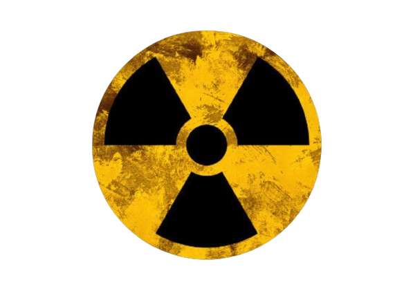
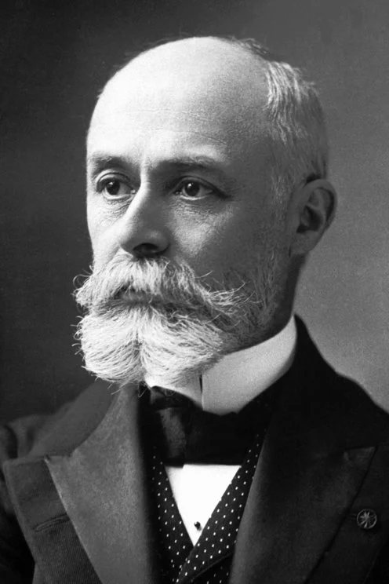

O que é ?
A radioatividade é um fenômeno natural ou induzido no qual certos átomos instáveis passam por processos de desintegração, emitindo partículas subatômicas e/ou radiação eletromagnética. Esse fenômeno foi descoberto por Henri Becquerel em 1896 e posteriormente estudado por Marie Curie e Pierre Curie, que cunharam o termo "radioatividade".
Átomos instáveis, também conhecidos como átomos radioativos, têm núcleos que não conseguem manter um equilíbrio entre as forças nucleares atrativas e repulsivas. Para alcançar uma configuração mais estável, esses átomos passam por processos de desintegração espontânea. Durante esse processo, partículas como partículas alfa (constituídas por dois prótons e dois nêutrons) e partículas beta (elétrons ou pósitrons) são emitidas, juntamente com radiação eletromagnética, como raios gama.
A radioatividade desempenha um papel crucial em diversas áreas, incluindo medicina (em tratamentos de câncer e diagnósticos por imagem), geração de energia (usinas nucleares), e datação de materiais arqueológicos e geológicos (datação por carbono-14, por exemplo). No entanto, a exposição excessiva à radiação pode ter efeitos nocivos à saúde, como danos ao DNA e aumento do risco de câncer.
O estudo e a compreensão da radioatividade são fundamentais para garantir o uso seguro e eficiente dessa forma de energia, bem como para minimizar os riscos associados à exposição radioativa. Normas rigorosas e medidas de segurança são implementadas em ambientes onde a radioatividade é utilizada, visando proteger trabalhadores, comunidades e o meio ambiente.
Surgimento
O termo "radioatividade" foi cunhado por Marie Curie e Pierre Curie em 1898, em reconhecimento às suas descobertas pioneiras no campo. A história da descoberta da radioatividade começou com as pesquisas de Henri Becquerel.
Em 1896, Becquerel estava investigando as propriedades dos raios X descobertos por Wilhelm Roentgen. Ele estava conduzindo experimentos com substâncias que emitem luz quando expostas à luz solar, acreditando que a fosforescência pudesse estar relacionada aos raios X. Becquerel escolheu o Em seus experimentos, Becquerel envolveu amostras de sal de urânio em papel fotossensível e as colocou em uma gaveta escura junto com uma placa fotográfica. Esperava-se que, se a fosforescência estivesse relacionada aos raios X, a placa fosse impressionada pela luz emitida pelo sal de urânio sob a influência da luz solar.
No entanto, um dia nublado impediu a exposição à luz solar. Apesar disso, Becquerel revelou a placa fotográfica e descobriu que estava impressionada de qualquer maneira. Isso indicava que o sal de urânio emitia radiação por conta própria, independentemente da exposição à luz solar. Ele havia descoberto a radioatividade, embora o termo ainda não tivesse sido cunhado.
Em seguida, Marie Curie, uma cientista polonesa, e seu marido Pierre Curie, começaram a estudar a radioatividade com mais detalhes. Eles isolaram dois novos elementos radioativos, o polônio e o rádio, e realizaram experimentos que mostraram que a radiação era uma característica intrínseca de certos átomos. Foi nesse contexto que os Curie introduziram o termo "radioatividade" para descrever esse fenômeno de emissão espontânea de radiação por certos materiais.